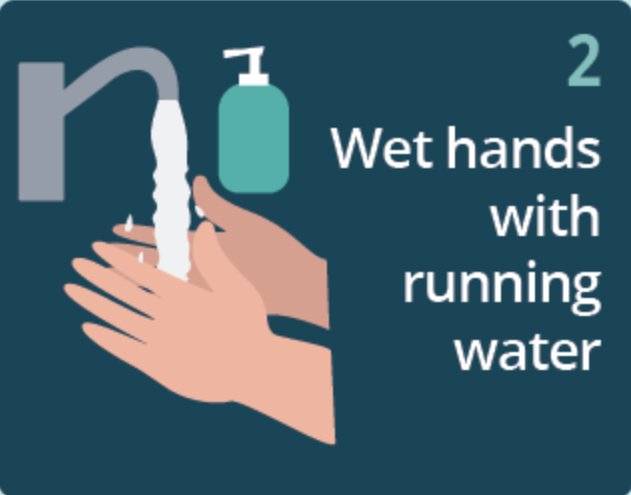
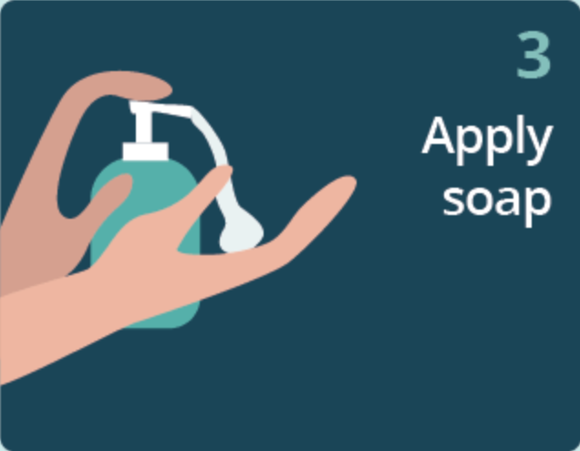
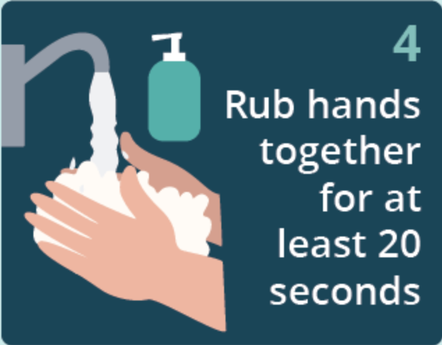
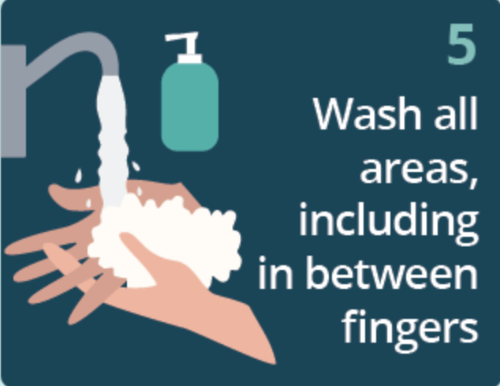
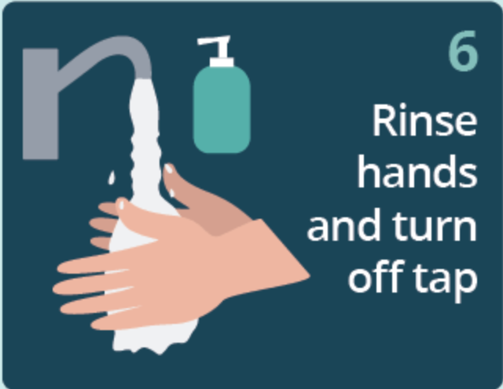
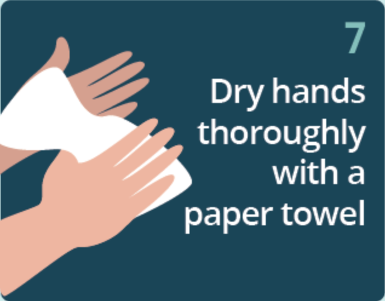

Hand Hygiene
Hand hygiene is a simple yet powerful way to protect yourself and others from infections. Our hands come into contact with countless germs throughout the day, making them a primary pathway for the spread of diseases. Washing your hands properly with soap and water eliminates harmful bacteria and viruses, reducing the risk of illness. By following the recommended handwashing steps, you can ensure your hands are clean and safe, whether you're at home, work, or on the go.






Steps to Prevent Infection
FAQs
1. What is infection prevention?
Infection prevention includes practices aimed at preventing the spread of infections in healthcare and community settings.
2. Why is handwashing important?
Handwashing is one of the most effective ways to remove germs, prevent the spread of infections, and keep yourself and others healthy.
3. How can I disinfect surfaces effectively?
Use an EPA-approved disinfectant and follow the instructions on the label. Focus on frequently touched surfaces like doorknobs and countertops.
4. What are the common signs of infection?
Common signs include fever, redness, swelling, pain, and unusual discharge from a wound.
5. How do vaccines help prevent infections?
Vaccines strengthen your immune system by teaching it to recognize and fight specific pathogens.
6. What is the proper way to wear a mask?
Ensure the mask covers your nose, mouth, and chin snugly without gaps. Avoid touching the mask while wearing it.
7. How can I avoid spreading infections to others?
Practice good hygiene, avoid close contact when you're sick, and follow isolation guidelines if required.
8. What is antimicrobial resistance?
Antimicrobial resistance occurs when bacteria, viruses, or other microbes no longer respond to medications, making infections harder to treat.